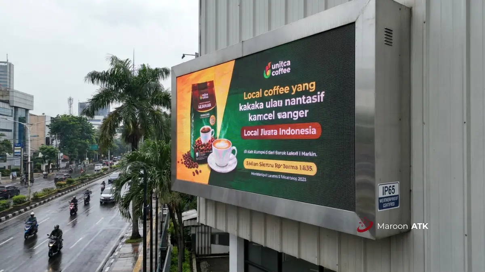

Jangan salah beli! Perbedaan mendasar antara videotron LED indoor dan outdoor terletak pada pixel pitch (kerapatan piksel), tingkat brightness (kecerahan dalam satuan nits), dan konstruksi fisik perlindungan cuaca. Videotron indoor memakai pixel pitch lebih rapat dan kabinet die-cast ringan yang senyap, sedangkan videotron outdoor mengutamakan kecerahan ekstra tinggi (>5.000 nits) dan ketahanan cuaca bersertifikasi minimal IP65.
Apa Itu Videotron LED dan Kenapa Penting bagi Instansi serta Perusahaan?
Videotron LED adalah layar besar berbasis modul dioda pemancar cahaya (LED) yang disusun menjadi satu kesatuan display berukuran besar, digunakan untuk menampilkan informasi, branding, atau siaran visual secara real-time. Bagi instansi pemerintah, kampus, sekolah, maupun perusahaan swasta, videotron LED berperan sebagai media informasi publik, papan pengumuman digital, hingga elemen branding prestisius di lobi gedung.
Pentingnya videotron LED bagi instansi terletak pada fleksibilitas kontennya. Berbeda dengan baliho atau banner statis konvensional, videotron dapat menampilkan konten dinamis yang diperbarui kapan saja tanpa biaya cetak ulang yang berulang-ulang:
- Gedung pemerintahan: Menampilkan informasi layanan publik, capaian kinerja, dan pengumuman kedinasan.
- Kampus dan sekolah: Menampilkan jadwal kalender akademik, prestasi mahasiswa, dan sambutan tamu VIP.
- Perusahaan swasta: Berfungsi sebagai elemen branding korporat di area lobi, ruang auditorium, atau fasad gedung kantor pusat.
Namun, memilih videotron yang tepat bukan sekadar soal ukuran diagonal layar. Spesifikasi teknis seperti pixel pitch, brightness, dan konstruksi kabinet menentukan apakah videotron tersebut cocok dipasang di dalam ruangan (indoor) atau di luar ruangan (outdoor). Kesalahan memilih spesifikasi dapat berakibat pada gambar yang buram, layar yang terlalu silau atau justru terlalu redup, hingga kerusakan akibat paparan cuaca.
Videotron LED Indoor vs Outdoor, Apa Perbedaan Pixel Pitch-nya?
Perbedaan pixel pitch videotron indoor dan outdoor terletak pada kerapatan piksel. Videotron indoor menggunakan pixel pitch rapat P1.25 sampai P4.0 untuk jarak pandang dekat, sementara videotron outdoor memakai P5.0 hingga P10 ke atas untuk jarak pandang jauh.
Pixel pitch adalah jarak antara pusat satu titik piksel LED ke titik piksel di sebelahnya dalam satuan milimeter. Semakin kecil angka pixel pitch, semakin rapat susunan titik piksel, sehingga gambar yang dihasilkan semakin tajam dan halus ketika dilihat dari jarak dekat tanpa terlihat efek bintik-bintik (grid moiré).
| Jenis Videotron | Lokasi Pemasangan | Pixel Pitch | Jarak Pandang Ideal |
|---|---|---|---|
| Indoor (Fine Pitch) | Ruang rapat eksekutif, Command Center | P1.25 – P2.5 | Sangat dekat (1 – 3 meter) |
| Indoor (Standar) | Lobi utama kantor, Ballroom, Aula | P3.0 – P4.0 | Menengah (3 – 7 meter) |
| Outdoor (Standar) | Signage gerbang kantor, Reklame jalan | P5.0 – P8.0 | Jauh (8 – 15 meter) |
| Outdoor (Skala Besar) | Papan skor stadion, Fasad gedung tinggi | P10 ke atas | Sangat jauh (> 15 meter) |
Menggunakan pixel pitch yang terlalu rapat untuk aplikasi outdoor berjarak jauh justru merupakan pemborosan anggaran yang signifikan, karena detail piksel ekstra rapat tersebut tidak akan mampu dibedakan oleh mata manusia dari jarak puluhan meter.
Bagaimana Tingkat Kecerahan (Brightness) Membedakan Videotron Indoor dan Outdoor?
Tingkat kecerahan videotron indoor dibatasi pada 600 hingga 1.000 nits agar nyaman di mata saat dipandang dalam ruangan tertutup berpendingin udara. Sebaliknya, videotron outdoor memerlukan brightness di atas 5.000 nits (bahkan hingga 8.000 nits) agar visual tetap terlihat jelas dan kontras meski terpapar terik sinar matahari siang hari secara langsung.
Brightness diukur dalam satuan nits (candela per meter persegi / cd/m²), yang menentukan seberapa intens cahaya yang dipancarkan modul LED.
| Aspek Visual | Videotron Indoor | Videotron Outdoor |
|---|---|---|
| Brightness Rata-rata | 600 – 1.000 nits | Di atas 5.000 nits (hingga 8.000 nits) |
| Alasan Utama Penetapan | Mencegah mata lelah/silau di ruang beratap tertutup | Melawan pancaran sinar matahari langsung (anti-washout) |
| Refresh Rate Standar | Minimal 3.840 Hz (ramah dokumentasi kamera) | 1.920 – 3.840 Hz sesuai jarak pandang audiens |
| Risiko Jika Salah Spesifikasi | Layar menyilaukan mata, suhu ruangan cepat naik | Visual tampak pudar, abu-abu, dan teks tidak terbaca siang hari |
Selain tingkat kecerahan, spesifikasi refresh rate juga sangat krusial. Refresh rate rendah (misalnya di bawah 1.920 Hz) dapat menyebabkan layar tampak bergaris-garis hitam bergulir atau berkedip (flickering) saat ditangkap oleh kamera smartphone atau kamera siaran liputan media. Hal ini wajib dihindari bagi instansi yang sering mengadakan konferensi pers atau siaran langsung di auditorium.

Apa Perbedaan Konstruksi Fisik dan Ketahanan Videotron Indoor vs Outdoor?
Konstruksi videotron indoor mengandalkan kabinet die-cast aluminium ringan yang seamless tanpa kipas pendingin bising, sementara videotron outdoor wajib bersertifikasi tahan cuaca minimal IP65 dengan perhitungan beban angin (wind load) yang ketat dari insinyur sipil.
| Aspek Konstruksi | Videotron Indoor | Videotron Outdoor |
|---|---|---|
| Material Kabinet | Die-cast aluminium presisi tinggi, tipis dan ringan | Kabinet baja galvanis atau aluminium heavy-duty dengan pelapis anti-korosi |
| Tampilan Sambungan | Seamless absolut, rata sempurna tanpa celah sekat modul | Memiliki celah mikro teratur untuk saluran ventilasi dan drainase air hujan |
| Sistem Pendingin | Disipasi panas pasif tanpa kipas (0 dB, senyap total) | Sirkulasi aktif dengan kipas industri berdaya hisap tinggi atau AC kabinet |
| Sertifikasi Proteksi | IP30 – IP43 (perlindungan debu ruangan biasa) | Wajib minimal IP65 (tahan semprotan air deras dan kedap debu pasir) |
| Perhitungan Struktur | Beban statis dinding interior atau standing bracket | Wajib analisis wind load, beban gempa, dan bracket pilar bertulang |
Videotron outdoor menghadapi tantangan lingkungan yang ekstrem, mulai dari curah hujan monsun tropis, radiasi sinar UV yang dapat menurunkan warna modul, kelembapan tinggi, hingga hempasan angin kencang. Oleh karena itu, bracket penyangga videotron outdoor wajib dikerjakan oleh tim konstruksi berpengalaman untuk menjamin keselamatan fasilitas umum di sekitarnya.
Jenis dan Variasi Videotron LED Berdasarkan Kebutuhan Ruangan
Untuk mempermudah tim purchasing dan General Affairs dalam memetakan anggaran, variasi videotron LED di lingkungan kantor dapat dikelompokkan ke dalam tiga kategori utama:
| Kategori Videotron | Rekomendasi Pixel Pitch | Lokasi Pemasangan | Fungsi Utama |
|---|---|---|---|
| Indoor Fine Pitch | P1.25, P1.53, P1.86, P2.0 | Ruang rapat direksi, Control Room, Auditorium mini | Menampilkan grafik keuangan, spreadsheet detail, dan video presentasi 4K |
| Indoor Standar | P2.5, P3.0, P4.0 | Lobi gedung kantor, Ballroom, Selasar serbaguna | Menampilkan greeting video tamu, pengumuman perusahaan, dan materi profil korporat |
| Outdoor Commercial | P5.0, P6.0, P8.0, P10 | Fasad gedung, Pintu gerbang gerbang kampus, Reklame jalan raya | Promosi publik, informasi agenda daerah, dan landmark visual gedung dari kejauhan |
Bagi instansi dengan kebutuhan gabungan — seperti videotron di lobi utama sekaligus videotron reklame di area gerbang luar gedung — konsultasi teknis spesifikasi modul sejak awal akan menghemat anggaran pengadaan secara signifikan.
Faktor Apa Saja yang Memengaruhi Pemilihan Spesifikasi Videotron LED?
Ketika menyusun dokumen Kerangka Acuan Kerja (KAK) atau Rencana Anggaran Biaya (RAB), tim procurement wajib mempertimbangkan lima faktor utama:
- Jarak Pandang Audiens Terdekat: Rumus praktisnya adalah jarak pandang dalam meter ≈ angka pixel pitch. Jika audiens terdekat berdiri pada jarak 3 meter dari layar, maka pixel pitch P3.0 atau P2.5 adalah batas optimal kenyamanan pandangan mata.
- Tingkat Pencahayaan Ruangan (Ambient Light): Ruangan dengan dinding kaca lebar (curtain wall) yang dimasuki banyak cahaya alami siang hari membutuhkan videotron indoor dengan kecerahan mendekati 1.000 nits agar warna tidak pudar.
- Kebutuhan Siaran dan Liputan Media: Pastikan driver IC menggunakan refresh rate 3.840 Hz jika videotron akan menjadi latar belakang panggung seminar atau ruang konferensi pers.
- Kapasitas Daya Listrik Gedung: Modul outdoor berdaya terang tinggi mengonsumsi watt yang jauh lebih besar dibanding modul indoor. Pastikan panel distribusi listrik (MCB) gedung memiliki cadangan daya yang memadai.
- Kondisi Lingkungan Pemasangan: Area semi-terbuka seperti kanopi selasar gedung atau area drop-off kendaraan sering kali menjadi area abu-abu. Meski beratap, cipratan tempias hujan dan debu kendaraan luar tetap memerlukan kabinet berstandar minimal IP65.
Kesalahan Umum Apa Saja saat Memilih Videotron LED untuk Lobi Kantor?
Berikut tiga kesalahan teknis yang paling sering terjadi pada proyek pengadaan videotron perkantoran:
- Terjebak Asumsi "Paling Rapat Pasti Terbaik": Memaksakan pixel pitch P1.25 pada lobi luas dengan jarak pandang rata-rata di atas 6 meter hanya melipatgandakan biaya pengadaan tanpa memberi peningkatan kenyamanan visual yang berarti. Untuk area lobi kantor, P3.0 atau P2.5 adalah titik ekuilibrium antara ketajaman visual dan efisiensi anggaran.
- Mengabaikan Garansi Modul dan Ketersediaan Suku Cadang: Banyak vendor tidak menyertakan cadangan modul LED dari batch produksi yang sama. Ketika satu modul mengalami dead pixel setahun kemudian, modul pengganti dari batch berbeda dapat memperlihatkan gradasi warna yang belang.
- Memasang Videotron Indoor di Selasar Semi-Outdoor: Menempatkan videotron kabinet indoor di area dekat pintu lobi otomatis yang terus-menerus terpapar angin lembap dan debu jalanan dapat menyebabkan korsleting modul dalam kurun waktu kurang dari setahun.
Selain videotron, instansi yang sedang mempersiapkan pengadaan perangkat teknologi interaktif lain untuk ruang rapat, seperti interactive flat panel, maupun kebutuhan penunjang operasional kantor seperti videotron LED dan alat tulis kantor, dapat menyesuaikan spesifikasi dengan kebutuhan ruangan masing-masing agar investasi lebih tepat guna.
Terkait standar teknis pengadaan barang dan jasa pemerintah, instansi dapat merujuk pada ketentuan resmi yang diterbitkan oleh Lembaga Kebijakan Pengadaan Barang/Jasa Pemerintah (LKPP) sebagai acuan regulasi pengadaan di lingkungan instansi negara.
Bagi instansi maupun perusahaan yang membutuhkan panduan lebih lanjut mengenai skema pengadaan barang secara berkala, silakan simak juga panduan mengenai paket pengadaan alat tulis kantor serta langkah-langkah praktis dalam memilih supplier ATK yang tepat untuk kebutuhan operasional kantor sehari-hari.
MAROON ATK melayani kebutuhan videotron LED indoor dan outdoor untuk instansi pemerintah, sekolah, kampus, dan perusahaan swasta di Jakarta, Surabaya, Malang, Denpasar, Makassar, serta seluruh Indonesia.
Kesimpulan
- Pixel pitch: Tentukan pixel pitch indoor (P1.25–P4.0) vs outdoor (P5.0+) berdasarkan jarak pandang terjauh dan terdekat audiens.
- Brightness: Pastikan kecerahan indoor tidak melebihi 1.000 nits agar nyaman di mata, dan outdoor minimal 5.000 nits agar gambar tidak pudar di bawah terik matahari.
- Ketahanan proteksi: Lokasi outdoor dan semi-terbuka wajib menggunakan sertifikasi minimal IP65 dengan kalkulasi beban angin profesional.
- Refresh rate: Pilih driver IC berkecepatan 3.840 Hz untuk lobi dan ruang auditorium yang sering digunakan untuk siaran kamera.
- Konsultasi vendor: Hubungi tim konsultan teknologi MAROON ATK untuk survei layout dan penawaran spesifikasi videotron bergaransi resmi.
Pertanyaan yang Sering Diajukan (FAQ)
Pixel pitch adalah jarak antar titik piksel LED dalam satuan milimeter; semakin kecil angkanya, semakin tinggi kerapatan dan semakin tajam gambar saat dilihat dari jarak dekat.
Untuk lobi kantor dengan jarak pandang menengah, pixel pitch P3.0 hingga P4.0 umumnya sudah memberikan hasil visual yang tajam dan efisien biaya.
Tidak disarankan, karena videotron indoor umumnya tidak memiliki sertifikasi IP65 dan tidak dirancang tahan air, debu, maupun tekanan angin seperti videotron outdoor.
Karena videotron outdoor harus tetap terlihat jelas meski terpapar sinar matahari langsung, sehingga tingkat kecerahan yang lebih tinggi diperlukan agar visual tidak pudar.
Kesalahan umum meliputi memilih pixel pitch yang tidak sesuai jarak pandang ruangan, mengabaikan refresh rate untuk kebutuhan siaran kamera, dan tidak mengecek sertifikasi ketahanan untuk lokasi semi-outdoor.

Asher Angelica
Konsultan pengadaan display digital dan teknologi ruang rapat korporat dengan fokus pada efisiensi investasi hardware, integrasi smart visual display, serta standarisasi fasilitas gedung perkantoran modern.